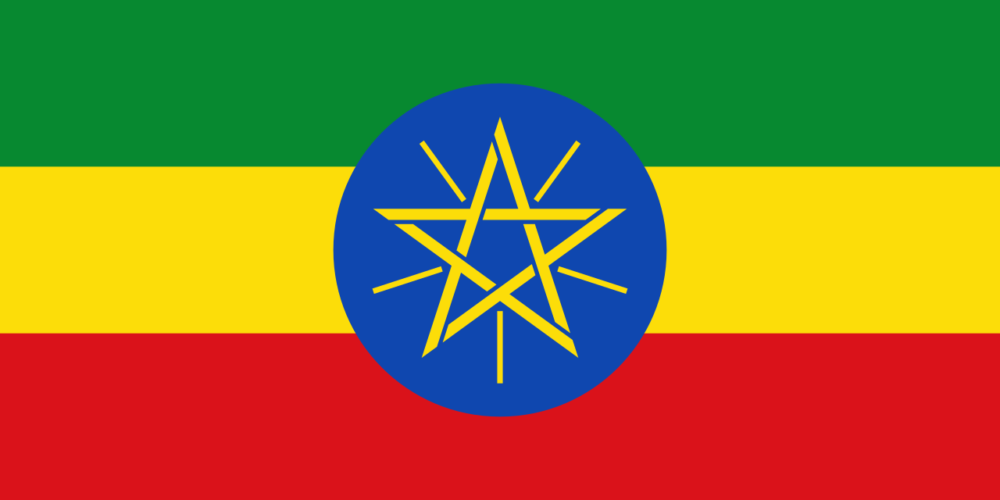

Etiópia
 A Etiópia, oficialmente República Democrática Federal da Etiópia, é um país localizado no Chifre da África, sem saída para o mar desde a independência da Eritreia em 1993. É limitada ao norte pela Eritreia, ao leste por Djibuti e Somália, ao sul pelo Quênia, e a oeste pelo Sudão e Sudão do Sul. Com cerca de 1,1 milhão de km² e mais de 120 milhões de habitantes, é o segundo país mais populoso da África, atrás apenas da Nigéria. Sua capital, Adis Abeba, é um importante centro político e diplomático, abrigando a sede da União Africana e da Comissão Econômica das Nações Unidas para a África. A Etiópia é considerada uma das civilizações mais antigas do mundo, com registros históricos que remontam a mais de 3 mil anos, e é reconhecida como berço de importantes reinos africanos, como Axum. É o único país africano que nunca foi totalmente colonizado, resistindo à ocupação italiana durante a Segunda Guerra Mundial, o que contribuiu para o fortalecimento de sua identidade e orgulho nacional. Atualmente, é um país com grande diversidade étnica e cultural, além de uma economia em crescimento que combina agricultura tradicional, mineração, turismo e, mais recentemente, industrialização.
História
A história da Etiópia é uma das mais ricas e complexas do continente africano. O território etíope é considerado o "berço da humanidade", já que fósseis importantes, como o de "Lucy" (Australopithecus afarensis), foram encontrados na região, datando de mais de 3 milhões de anos. Do ponto de vista histórico, a Etiópia é herdeira do antigo Reino de D'mt e, mais tarde, do Império Axumita (século I a.C. – século X d.C.), um dos mais poderosos da Antiguidade africana. Axum foi um grande centro comercial que controlava rotas entre a África, a Arábia e a Índia, além de ser uma das primeiras civilizações do mundo a adotar oficialmente o cristianismo, no século IV, sob o rei Ezana. Esse legado religioso consolidou a Igreja Ortodoxa Etíope, que permanece até hoje como um dos pilares da identidade nacional. Durante a Idade Média, a Etiópia foi conhecida como o mítico "Reino do Preste João", atraindo a curiosidade dos europeus. Dinastias cristãs expandiram e defenderam o território contra invasões muçulmanas vindas da Somália e contra o avanço do Império Otomano. A partir do século XIX, sob a liderança do imperador Menelik II, a Etiópia resistiu ao colonialismo europeu, derrotando a Itália na Batalha de Adwa em 1896, um evento de enorme importância simbólica para toda a África, pois mostrou que era possível resistir ao domínio europeu. Essa vitória garantiu a independência do país em uma época em que quase todo o continente estava colonizado.
No século XX, o imperador Haile Selassie modernizou o Estado, foi figura importante na fundação da ONU e símbolo para o movimento pan-africanista. Apesar de sua liderança marcante, o país sofreu com a invasão italiana de 1936 a 1941, durante a Segunda Guerra Mundial, mas conseguiu expulsar as tropas de Mussolini com apoio aliado. Após décadas de governo imperial, em 1974, Selassie foi deposto por um golpe militar que instaurou o regime socialista do Derg, responsável por um período de forte repressão, fome e guerras civis. Em 1991, o Derg foi derrubado pela Frente Democrática Revolucionária do Povo Etíope, marcando a atual fase republicana. Desde então, a Etiópia tem enfrentado desafios como tensões étnicas, conflitos regionais (incluindo a recente guerra em Tigré) e dificuldades econômicas, mas continua a desempenhar papel central no Chifre da África e no continente como um todo.
Cultura
A cultura etíope é extremamente diversa e rica, refletindo a convivência de mais de 80 grupos étnicos e diferentes tradições religiosas. O cristianismo ortodoxo é a religião predominante, mas o islamismo e crenças tradicionais africanas também possuem grande relevância, tornando o país um mosaico cultural e espiritual. A música e a dança são elementos marcantes, com estilos únicos como o eskista, que utiliza movimentos intensos de ombros e pescoço, além da música tradicional baseada em instrumentos como o masenqo (violino de uma corda) e o krar (lira). A Etiópia também é internacionalmente reconhecida pelo jazz etíope, que mistura sonoridades locais com influências modernas. A gastronomia é outro aspecto central da cultura. O prato nacional é o injera, um grande pão fermentado feito de teff, acompanhado por diferentes ensopados de carne (como o doro wat, feito de frango com molho picante) e legumes. A tradição do café etíope é mundialmente famosa, já que o país é considerado o berço dessa bebida. O café não é apenas um produto de exportação, mas também um elemento social, preparado em cerimônias que simbolizam hospitalidade e união comunitária.
No campo literário e artístico, a Etiópia possui uma herança milenar, incluindo manuscritos religiosos escritos em ge’ez, uma antiga língua litúrgica ainda usada pela Igreja Ortodoxa. Arquitetonicamente, destaca-se a cidade de Lalibela, conhecida por suas igrejas esculpidas em rocha, consideradas Patrimônio Mundial da UNESCO. Essa tradição arquitetônica se une a monumentos históricos, castelos como os de Gondar e palácios imperiais, que testemunham a grandeza do passado etíope. A diversidade cultural também se manifesta nas roupas típicas, com tecidos de algodão branco ornamentados com bordados coloridos, especialmente usados em festas religiosas e casamentos.


Clima
A Etiópia apresenta uma grande variedade climática, influenciada por sua topografia montanhosa e pela proximidade com o equador. As terras altas centrais possuem clima temperado, com temperaturas amenas ao longo do ano, o que favorece a agricultura e a concentração populacional. Já as regiões baixas, como o deserto de Danakil e áreas próximas ao vale do Rift, são extremamente quentes e áridas, com temperaturas que podem ultrapassar os 45 °C, sendo algumas das mais altas do planeta. O país possui duas estações principais: a chuvosa (kiremt), que vai de junho a setembro, e a seca (bega), de outubro a maio. Essa alternância de estações é vital para a agricultura, já que a maioria da população depende do cultivo de subsistência. Apesar disso, a irregularidade das chuvas pode causar períodos de seca, que historicamente levaram a crises alimentares. Em contrapartida, o clima ameno das montanhas fez da Etiópia uma das regiões mais habitáveis do leste da África desde a Antiguidade.
Biodiversidade
A Etiópia possui uma das biodiversidades mais impressionantes da África, resultado de sua variedade de climas e ecossistemas, que vão desde desertos e savanas até florestas tropicais e montanhas. O país é considerado um dos "hotspots" mundiais de biodiversidade, com alto número de espécies endêmicas. Entre os animais típicos estão o babuíno-gelada, encontrado apenas nas montanhas etíopes; o íbex-da-etiópia, espécie rara de cabra selvagem; e o lobo-etíope, considerado o canídeo mais raro do mundo. Também há presença de leopardos, hienas, antílopes e uma enorme diversidade de aves, o que faz do país um destino importante para o ecoturismo.
A flora etíope é igualmente diversificada, com florestas de bambu, acácias e plantas adaptadas a diferentes altitudes. O café arábica, uma das espécies de café mais cultivadas do mundo, tem origem nas florestas etíopes, reforçando a importância ecológica e econômica da biodiversidade local. O país conta com vários parques nacionais e reservas, como o Parque Nacional de Bale e o Parque Nacional de Simien, ambos Patrimônios da Humanidade, destinados a proteger ecossistemas únicos e espécies ameaçadas. No entanto, o desmatamento, a expansão agrícola e as mudanças climáticas representam ameaças crescentes, exigindo políticas de conservação mais eficazes.


Cidades
As cidades da Etiópia refletem a combinação entre tradição milenar e modernização acelerada. A capital, Adis Abeba, é o principal centro político, econômico e cultural do país, além de sediar a União Africana, o que a torna conhecida como a "capital diplomática da África". A cidade apresenta uma mistura de edifícios modernos, bairros históricos e mercados tradicionais como o Merkato, um dos maiores da África. Outras cidades importantes incluem Gondar, famosa por seus castelos medievais e pela herança do período imperial; Lalibela, conhecida mundialmente pelas igrejas esculpidas na rocha, um dos maiores tesouros religiosos da humanidade; Axum, berço do antigo império axumita e local de obeliscos e ruínas arqueológicas; e Dire Dawa, que se destaca como centro comercial e ferroviário.
Além delas, cidades como Mekele, Bahir Dar e Harar também possuem grande relevância. Harar, em especial, é considerada Patrimônio Mundial da UNESCO por sua arquitetura islâmica, muralhas históricas e tradição cultural única, incluindo o hábito secular de alimentar hienas na cidade. Já Bahir Dar, às margens do Lago Tana, é um centro turístico por abrigar mosteiros medievais e ser ponto de origem do rio Nilo Azul. Essas cidades, cada uma à sua maneira, contribuem para a riqueza cultural, histórica e econômica da Etiópia, consolidando o país como um dos mais fascinantes do continente africano.